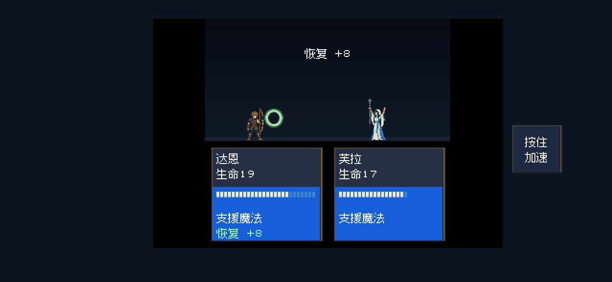
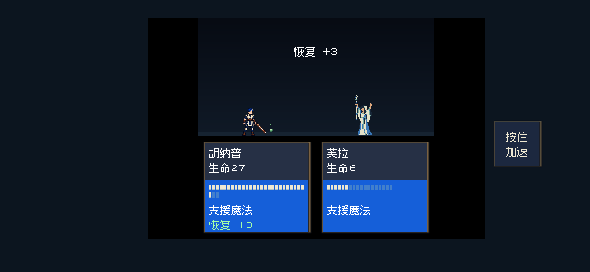
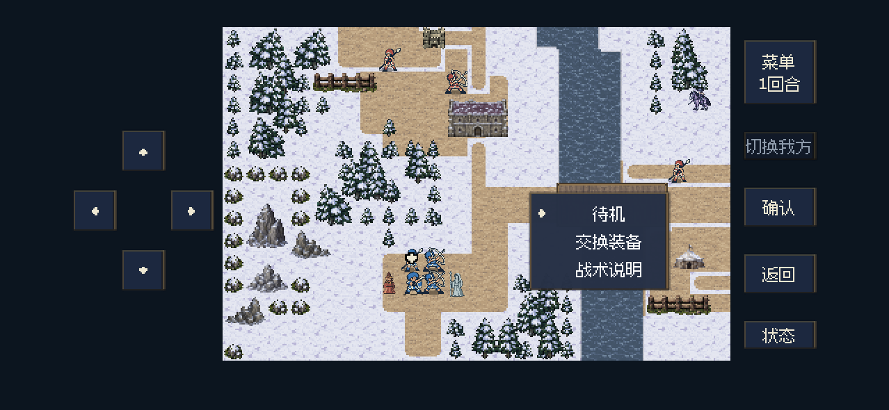
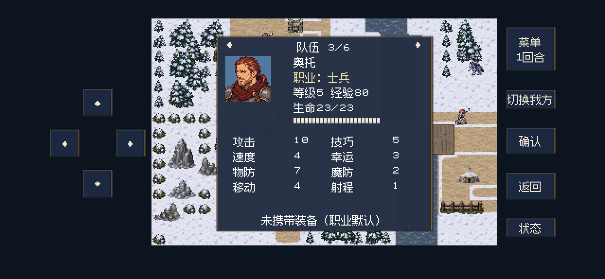

回血反馈、速度文案与待机菜单
2026-10-28 · 针对性检查通过。恢复逐格补血并配音效，显示实际恢复数量；“速度”文案统一；移动后“待机”放第一项。本次保留全部经验、追击和恢复量规则，未更新iPhone。
完整公式、钢盾与原作依据、经验表及恢复量说明 · 后台验证记录
钢盾增加5物防，不额外扣速度。持盾奥托使用重量0的默认普通枪，4速对3速骑兵可以追击，沿用FC版《外传》的比较方式。
恢复：逐格回血，显示实际恢复8点，配合HP音效。
全体恢复：每个实际回血的队员分别显示；生命费用与经验只结算一次。
移动后的行动菜单：“待机”位于第一项并默认选中。
奥托详情：职业与装备属性保留，“速度”文案与升级页统一。
以上是后台Godot原生运行截图，使用移动端布局。伤情采用隔离测试条件，施法、动画、音效与经验确认通过正常游戏流程执行，本轮未重复完整章节试玩。